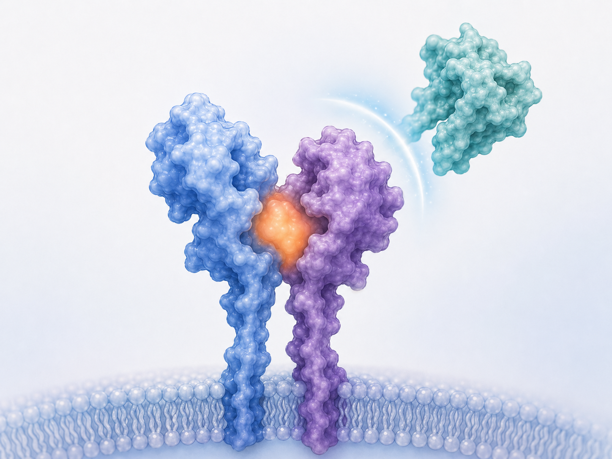
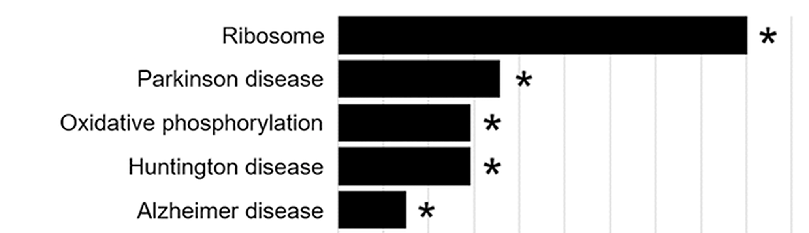

Parkinson’s Disease

My laboratory is focused on understanding disease mechanisms that may contribute to Parkinson’s disease, with particular emphasis on inappropriate inflammatory signaling, autophagy dysfunction, and lipid-mediated regulation of neuronal health. In collaboration with Dr. Danny Xu at Idaho State University, we have developed the first pharmacological inhibitor of human IL13RA1. Our hope is that this compound will prevent inappropriate allergy responses mediated through IL13RA1 and thereby provide benefit for individuals suffering from PD, seasonal allergies, or related inflammatory conditions. This work is ongoing.
We also have an extensive background in dissecting autophagy dysfunction in the context of familial PD. We identified and published findings on a mutation in VPS35 that causes an inherited form of PD. Surprisingly, we discovered that this VPS35 mutation was closely linked with disordered signaling from the extracellular matrix through the hyaluronic acid receptor HMMR. Specifically, the VPS35 mutation caused selective degradation of the v3 splice variant of HMMR, suggesting a failure to properly recycle this receptor. This likely resulted in overactive hyaluronic acid-HMMR signaling and subsequent autophagy dysfunction. Consistent with this model, knockdown of total HMMR restored autophagy in VPS35 mutant cells.

We are also exploring the possibility that lipid signaling is an underappreciated regulator of autophagy dysfunction in PD. We focused on FABP5 because its expression is highly enriched in the substantia nigra, the region of the brain containing the dopaminergic neurons that are preferentially lost in PD. Our work showed that FABP5 regulates autophagy through lipid binding, and we identified three FABP5-bound lipids, 5-oxo-eicosatetraenoic acid, stearic acid, and hydroxystearic acid, that potently inhibited autophagy in dopaminergic neuron-like cells. Interestingly, 5-oxo-eicosatetraenoic acid is a potent eosinophil-associated allergy mediator, raising the possibility of another mechanistic connection between allergic inflammation and PD that may intersect with our IL13RA1 work. We also identified palmitic acid, a major component of palm oil, as a lipid that bound FABP5 but did not disrupt autophagy; however, RNA-Seq analysis of palmitic acid-treated cells identified Parkinson’s disease, Huntington’s disease, and Alzheimer’s disease as the only significant KEGG-annotated disease pathway hits for that lipid.